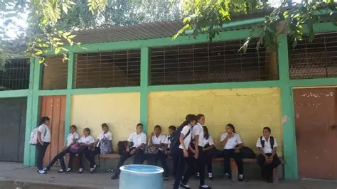

Explore las etapas fundamentales, los hitos académicos y la evolución estructural que consolidaron al Instituto Gubernamental Roberto Micheletti Bain como el pilar socioeducativo de Agua Blanca Sur.
La historia de nuestra institución no hunde sus raíces primitivas en decretos gubernamentales fríos ni presupuestos centralizados opulentos, sino en la ardiente necesidad y determinación férrea de una comunidad rural que se negaba rotundamente a contemplar cómo sus generaciones jóvenes quedaban desprovistas de alternativas formativas medias.
A finales del siglo pasado, los estudiantes egresados de la instrucción primaria de la Aldea de Agua Blanca Sur debían afrontar trayectos inhóspitos y costosos de muchos kilómetros hacia el municipio de El Progreso, Yoro, quedando expuestos a vicisitudes climáticas e infraestructurales severas que provocaban índices alarmantes de deserción escolar.
Impulsados por las fuerzas vivas, patronatos comunitarios y juntas comunales extraordinarias, se estructuró un comité pro-fundación que recolectó recursos económicos, gestionó audiencias oficiales y cimentó las bases primigenias de lo que prontamente se transformaría en un faro imperecedero de la educación pública formal y gratuita.

La dirección del instituto comprendió con extraordinaria lucidez que las demandas del nuevo milenio exigían capacidades operativas técnico-prácticas que superaran la simple formación teórica humanista general. Fue así como se gestionó de forma estratégica la transición hacia el modelo Polivalente.
Esta reestructuración conceptual trajo consigo la dotación de entornos de experimentación reales: se habilitaron laboratorios dedicados al estudio de la informática, talleres mecánicos, laboratorios de ciencias biológicas y químicas, y cocinas industriales orientadas a la autogestión comercial.
Gracias a esta evolución pedagógica y curricular, las modalidades especializadas del Bachillerato Técnico Profesional en Informática (BTPI) y en Contaduría y Finanzas (BTPCF) se posicionaron como ofertas líderes en el Valle de Sula.
La historia contemporánea de nuestra institución se escribe con letras indelebles de oro en los registros oficiales de la educación media nacional. El centro ha demostrado de forma fehaciente que las limitaciones geográficas o presupuestarias de los entornos rurales se diluyen ante un esquema académico riguroso y una disciplina coordinada.
Uno de los hitos históricos de mayor orgullo regional se alcanzó al situar al instituto en el **Puesto #18 a Nivel Nacional** en el ranking global de centros educativos gubernamentales con mejor desempeño en la Prueba de Aptitud Académica (PAA) de la Universidad Nacional Autónoma de Honduras (UNAH).
Con un sobresaliente **83.3% de índice de aprobación global**, el área de Ciencias y Humanidades (BCH) validó el rigor metodológico del cuerpo docente, consolidándonos como un referente de excelencia superior en todo el departamento de Yoro.
El espíritu distintivo del estudiante de nuestra institución no se limita exclusivamente a la codificación de algoritmos o al balanceo de cuentas fiscales complejas, sino que se enraíza profundamente en la preservación de las tradiciones artísticas e históricas que configuran la nacionalidad hondureña.
A lo largo de los años, el cuadro de danza folclórica institucional se ha alzado como uno de los colectivos artísticos más laureados, disciplinados y de mayor prestigio en toda la zona noroccidental de la nación.
Mediante interpretaciones magistrales en certámenes competitivos intercolegiales y festivales tradicionales en El Progreso y Morazán, el instituto continúa forjando ciudadanos integrales que no solo dominan las ciencias técnicas de vanguardia, sino que también honran, respetan y difunden el patrimonio intangible de sus ancestros.
Al encontrarnos inmersos en el ciclo lectivo del presente año 2026, miramos nuestro pasado con una gratitud inmensa hacia los fundadores y docentes eméritos, pero fijamos la mirada con absoluta determinación en las innovaciones de la era digital avanzada. La modernización sistemática de nuestras aulas tecnológicas garantiza que Agua Blanca Sur permanezca inalterable como la cuna indiscutible de líderes aptos para transformar a Honduras.